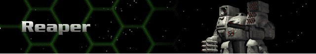
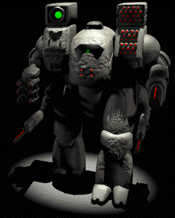

› |
› |
› |
› |
Reaper |

|
Chassis: Reaper Almost every weapon type can be represented on the Reaper. It was designed to take advantage of advances in Bioderm technology. The Reaper allows the best Bioderms to respond with technology appropriate to any situation. Standard equipment: Crystal Matrix Sensor, a Fission 350 reactor, Lock-On 100 targeting computer, Shield 1200 shield class, Chemical 330 battery, Improved Life Support, Didrate 28cm armor, Pre-Flexive drive system, a jump capability of one, and lesser movement yield. Available at Tech Level 6. |
 |
Max. Weapons Capabilities
These are all of the weapons which can be mounted to this Herc once you have reached all Technology levels through promotions.
| Energy | Missile | Cannon | Plasma | ELF | Adv. Tech. |
|---|---|---|---|---|---|
| SE400 Laser Cannon | SP Missiles | Fusion Flamer | Lt. ELF | Neutron Gun | |
| SC400 Comp. Laser | SG Missiles | Plasma Cannon | Med. ELF | Thermal Lance | |
| SP500 Lt. Pulse Laser | MicroMissiles | Plasma Beam | Auto ELF | EMP Blaster | |
| SE660 Laser Cannon SE1000 Laser Cannon |
Saturation Missiles | Fusion Cannon | Chain ELF | Particle Beam Wpn. | |
| SC1000 Comp. Laser | Hunter-Killer Missiles | Fusion Gatling | ELF Mortar | EMP Beamer | |
| SP750 Std. Pulse Laser | Rapid Saturation Rockets | Hvy. Plasma Cannon | Hvy. ELF | Neutron Beam | |
| SE700 Laser Gatling | MY Missiles | Thermal Needler | |||
| SP800 Pulse Laser Gatling | Jihad Missiles | EMP | |||
| SCX Hvy. Comp. Laser | SP2 Hvy. Missiles | Fusion Annihilator | |||
| SP1200 Magna Pulse Laser | Katyusha-Z Rockets | ||||
| Lt. Comp. Blaster | SPX Rapid Missiles | ||||
| Hvy. Comp. Blaster | Hvy. Saturation Rockets | ||||
| HOG Missiles | |||||
| H-K Rapid Missiles |